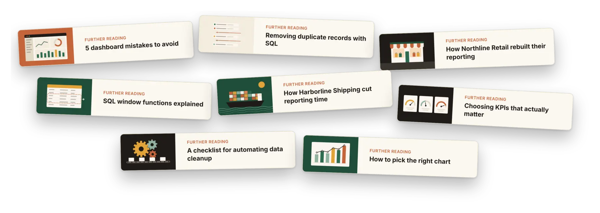
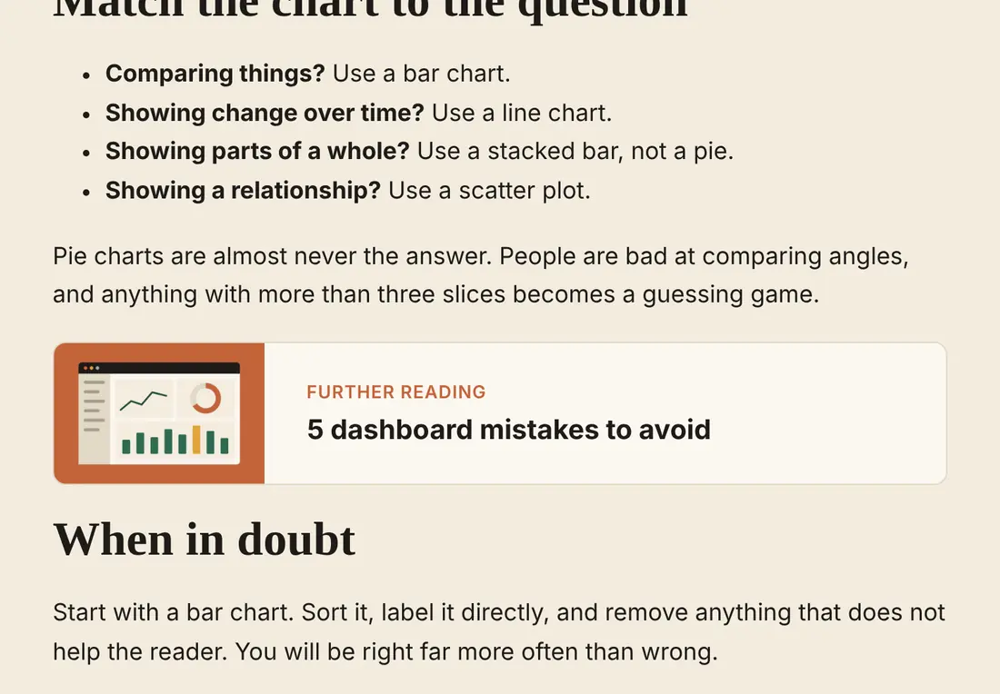
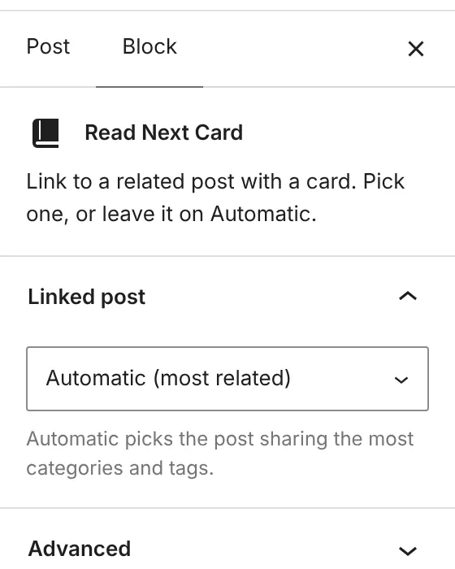
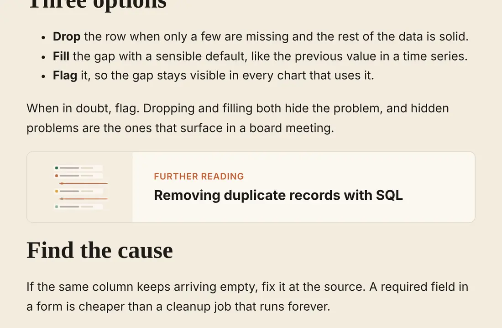
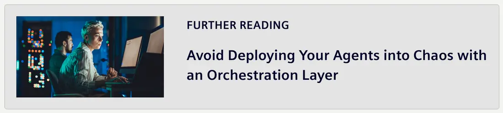

Read Next Card
A WordPress block that turns an internal link into a “Further reading” card. Pick the post yourself, or leave it on Automatic and the block finds the most closely related article for you.
- Originally for
- The Mendix blog
- My role
- Design and development
- Built with
- WordPress, PHP, block editor, JavaScript
- Status
- Still live on the Mendix blog
- Now
- Open source, rebuilt with an Automatic mode

Eight cards from the demo site, all from the same block.
The problem
Good blogs keep readers moving from one article to the next. But a plain text link in the middle of a paragraph is easy to skim past, and writers rarely stopped to add one.
The Mendix blog needed a way to point readers to a related article that actually looked like an invitation: an image, a clear label and the article’s title, without asking writers to design anything.
An internal link should look like something you’d want to click.
A card that stays current
The card pulls everything from the post it links to: the featured image, the title, the link. The writer only chooses which post. If that article is renamed or gets a new image later, every card pointing to it updates on its own.
Long titles are trimmed to twelve words, so the card stays a consistent size wherever it appears.

Automatic mode
The original version needed the writer to choose a post every time. For the rebuild, I added an Automatic option that picks one for them:
- Look at the current post’s categories and tags.
- Fetch recent posts that share at least one of them.
- Score each one: a point for every category and tag in common.
- Show the highest score, with the newest post winning a tie.
If nothing matches, the block shows nothing rather than a random link. A writer can still override it with a specific post at any time.


Still running
The original is still in use on the Mendix blog. In the same 100-post sample I used for Campaign CTAs, 20 posts had Further reading cards, 36 cards in all, with up to four in a single article.

Rebuilding it
The original was a shortcode, [related_content id=123], with markup that depended on our theme. I rebuilt it from scratch as a block:
- A block instead of a shortcode, with a post picker and a live preview in the editor.
- Automatic mode, so every post can have a useful link without extra work.
- Self-contained styles registered through
block.json, so the card looks the same in the editor and on the page, and any theme can restyle it.
What I'd add next
Automatic only looks at categories and tags, and only at the 20 most recent matches, which keeps it fast but can miss an older, closer article. Caching each post’s match and scoring a wider pool in the background would fix both.
To try it, open the live demo above and edit any post that has a card.